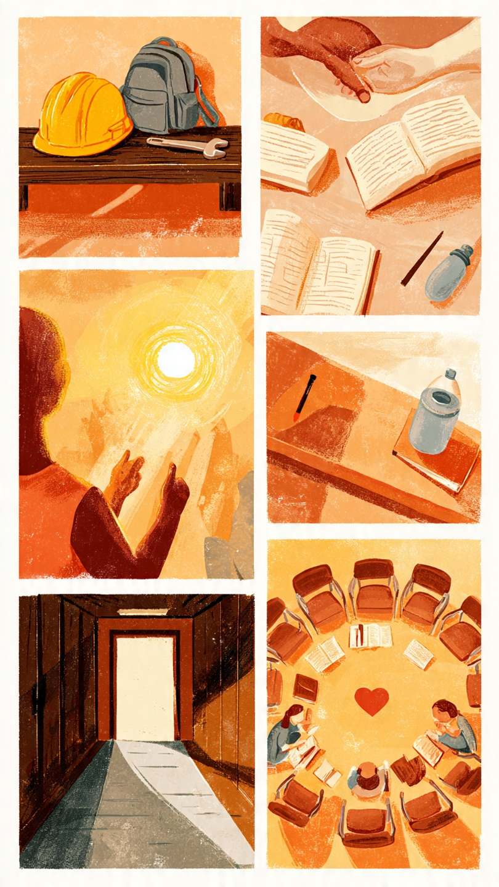

Testimonios de alumnos reales (experiencias reales)
Daniel – Abandonó por problemas económicos en casa
Yo soy Daniel y cursaba 6° semestre cuando tuve que salirme.Mi papá se quedó sin trabajo y en casa somos 4 hermanos. Empecé a faltar porque conseguí chamba de ayudante en un taller para llevar algo de dinero.Al principio pensaba que solo sería un rato, pero entre las desveladas y el cansancio reprobé 3 materias.Los maestros me dijeron que podía regularizarme,pero ya debía colegiaturas y no alcanzaba para los camiones.Sentí que le fallé a mi mamá.Me dolió dejar la prepa a meses de terminar porque quería ser el primero de mi familia con certificado. Ahora trabajo de tiempo completo, pero sí me arrepiento porque veo que sin prepa no me suben el sueldo ni me dan seguro.
Mariana – Iba a abandonar por bajo rendimiento, pero una amiga la motivó a seguir
Soy Mariana, estoy en 6° semestre y hace 4 meses casi tiro la toalla. Reprobé Matemáticas y Química, y me dio pena con mis papás.
Pensé “ya para qué sigo si no puedo”.Dejé de entrar a clases una semana.Mi mejor amiga,Fernanda, se dio cuenta y fue a mi casa.Me dijo que ella también había reprobado pero que entre las dos le íbamos a echar ganas.Me ayudó a estudiar en las tardes y me acompañó a hablar con el orientador.Hicimos un plan para pasar los extras.Gracias a ella no me salí.Entendí que pedir ayuda no es de débiles.Ahora ya pasé mis materias y voy a graduarme.Si no fuera por esa amistad,hoy no estaría aquí.

Luis – Abandonó por situación familiar y embarazo adolescente
Me llamo Luis y abandoné en 6° semestre.Mi novia y yo fuimos papás a los 17. Cuando nació mi hijo,tuve que buscar trabajo porque sus papás la corrieron de la casa.Yo estudiaba en la tarde y trabajaba en la mañana,pero el bebé se enfermó mucho y ya no podía con las dos cosas.La escuela me quedaba a hora y media y gastaba mucho en pasajes.Hablé con el director para pedir chance, pero necesitaba estar al corriente y ya debía varias materias. Decidí salirme para mantener a mi familia.Fue la decisión más dura porque me faltaba súper poco.Quiero regresar en el sistema abierto cuando mi hijo esté más grande,porque sin prepa no me contratan en ningún lado formal.
Andrea – Pensó en dejar la escuela por falta de motivación, pero un maestro la hizo cambiar
Soy Andrea,de 6° semestre.En quinto me desanimé horrible.Sentía que nada de lo que veía en la escuela me servía.Mis papás siempre me decían “échale ganas”,pero yo no le veía sentido.Empecé a faltar y mis calificaciones bajaron.Un día el profe de Historia me preguntó qué pasaba. Le dije que quería salirme para meterme a trabajar.Él no me regañó.Me contó que él casi deja la prepa, pero un maestro lo metió a un concurso de oratoria y ahí descubrió que le gustaba enseñar.Me invitó a un taller de liderazgo de la escuela.Ahí conocí a otros chavos y entendí que la prepa no solo es memorizar,también es para conocerte.Ese profe me salvó.Ahora ya tengo claro que quiero estudiar psicología y por eso sigo aquí.
Jorge – Abandonó por violencia en casa y falta de apoyo
Yo soy Jorge y dejé la prepa en 6° semestre. En mi casa había muchos problemas. Mi padrastro tomaba y se ponía agresivo. Varias veces llegué a la escuela sin dormir o con moretones. Me daba vergüenza y me empecé a aislar. Bajé mucho mis calificaciones y los orientadores me mandaron llamar, pero yo no dije nada por miedo. Un día la situación explotó y me fui de mi casa con mi tía a otra ciudad. Allá ya no pude revalidar a tiempo y perdí el semestre. Me faltaban solo 4 meses para terminar. Me siento frustrado porque sé que pude haber pedido ayuda antes. Ahora estoy juntando para entrar a la prepa abierta, porque sin certificado no paso de ayudante de cocina.
Karla – Estuvo a punto de salirse por ansiedad, pero el grupo de apoyo escolar la sostuvo
Me llamo Karla y curso 6° semestre. Desde que empezó el último año me dio una ansiedad muy fuerte. Tenía ataques de pánico antes de los exámenes y sentía que no iba a poder con la universidad. Pensé en salirme porque ya no aguantaba. Falté casi un mes completo. La psicóloga de la prepa marcó a mi casa y me citó. Me canalizó al grupo de apoyo emocional que tienen aquí. Ahí conocí a otros compañeros que sentían lo mismo que yo. Hicimos técnicas de respiración y organización. Mis maestros también me dieron chance de entregar trabajos atrasados. Poco a poco me fui sintiendo mejor. Si no hubiera existido ese espacio, yo no seguía. Hoy ya estoy haciendo mi trámite para la universidad. Aprendí que los problemas de salud mental también son reales y que hablarlos te puede salvar de abandonar.